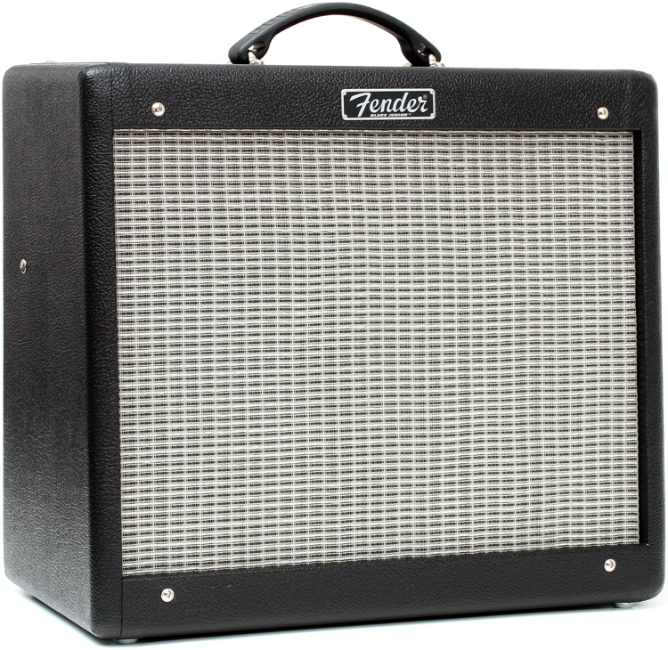
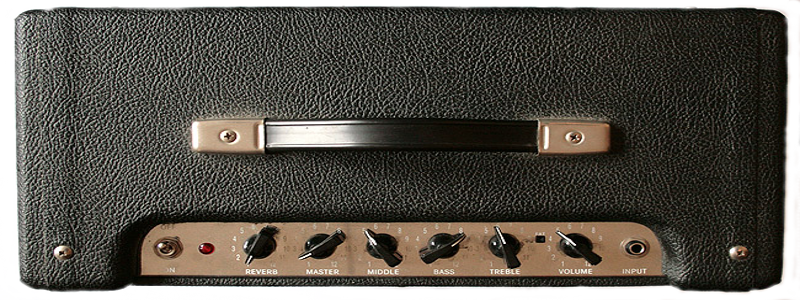

The aim of this website is to share my passion for the electric guitar. On this site you'll be able to view my guitar of choice, as well as a few of my favorite pedals, why I chose them and how I approach them in shaping my tone.
My axe of choice is the all American Fender Deluxe Telecaster in Aged Cherry Burst. Comes stock with N3 noiseless pickups, the Modern C fretboard is a delight, and the tuner locks keep me in tune for long sets.
If there is a specific topic you'd like to jump to, please feel free to navigate accordingly!
The Amp

This is the Fender Blues Jr all tube amp. It's a classic choice, especially when paired against a Fender Telecaster. I was originally stuck choosing between a Blues Jr and a Vox AC15, but I ultimately chose the Blues Jr for 4 reasons.
Simplicity with an unchallenged clean sound.
15 Watts is just the right headroom I need to start "breaking" in my smaller Church venues.
Availability and budget - the Blues Jr I found to be more available at more reasonable prices than the coveted Vox AC15 CC with the coveted cream back celestion speaker cones.
The "brightness" of the Telecaster is better paired with the darker Blues Jr in comparison to the "brighter" Vox AC15.
But in your own guitaring journey, you may very well choose to pair your Tele with a Vox AC 15, and many do! But just as music is eclectic and myriad, so are the pedal paths, chains and combinations. When pursuing my pedal chain, I found the Blues Jr as a better match with my setup and tonal preferences.

Speaking of amp tone, I didn't mod my amp (at least yet...). I play for church where our setup is "mobile", as in we don't have a set building, and we often have to face playing limitations due to each venue. This basically means I can't crank up my master volume to 9 and achieve the "big box" tone. Here are three tips I use in achieving good, open and deep tone in a venue where you can't crank it up.
Crank the volume up before the master
One way I view the relationship of the two volume knobs is that the volume option will control how hard you hit the tubs, whereas the Master Volume will control the overall volume of what you create with the amp. You can actually control where you break up the gain and set that perfectly, then use the Master Volume to control how loud you can basically get away with in your venue. Of course, from my experience, the louder I can get the better-- simply because it allows for depth and openness in tone (versus the boxed in tone Blues Jr may be notorious for)
Bottom out, cut the tone
If you're like me, you're not playing with Hillsong United. In fact on my band, we're holding down the fort with a drummer, a praise lead (Acoustic and Vocals), and me the lone electric guitarist. While this is a ton of fun, there are a lot of tonal ranges that need to be filled in in my job-- and not just the higher end wailing solo registers, but the bottom ends as well.
But cranking that Bass to 10 helps me achieve the depth in my tone I'm looking for in my clean tones. Pair that with a nice compressor, reverb, a solid low gain OD, and it's butter to your ears.
One last note on this point is to cut the treble down to 4. I do this since the Telecaster is so bright anyways, it actually doesn't sound dull at all. This is totally preferential, and some may very well want the tone very up. But I found that if the tone is too high, it's a bit piercing to the ears. I want a nice warm, round, clean sound that I can achieve through the Telecaster. And when I want to bite the ears, I use the bridge pickup on the Tele for the treble boost.
Crank the Mid to 9
This is pretty self-explanitory. If you're looking for that "at-breakup" tone, then you need to boost your mids so that you have something to actually breakup. I learned the hard way that by cutting my mids (which in some contexts may work), you lose the crunchy bite that most people are looking for in there tone. So I boost this to work in tandem with the volume knob at 6 to achieve that breakup tone.
Pedals
A popular website I use to purchase used pedals, that almost always is cheaper even when buying new since you can negotiate prices, is Reverb.
Another Blog Post
An already existing website that covers similar information, but in broader depth than this one, can be found here.
The Good, the Bad, the Ugly
I think this website does the following well:
Dynamic and mobile optimized
The website adapts to fit whatever screen size I use to view the page.
The navigation bar is beautiful and is dynamic. It has a sliding fadeaway animation as you scroll down the page.
Centered and beautiful
The content remains centered and adapts to multiple screen sizes.
I like how they represent the pictures of pedals as a one row table, and each picture is a link to a different part of the website.
I looked into the code for this section and realized that they have a separate CSS document helping them to style it. In that CSS document, they lay out the floats and pads--all of which I am super excited to learn next week!
Freezed search bars
I'm glad they freezed the search bar at the top so that people could search for pedals as they read this content, and that they hid the navigation bar.